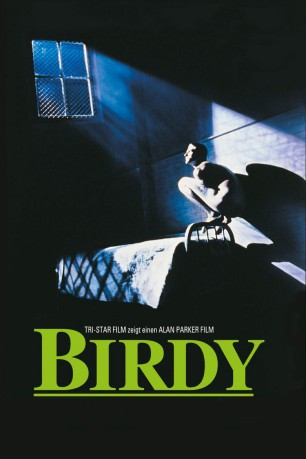

#1552 Birdy
 
 IMDB-Wertung: 7.3 / 10
IMDB-Wertung: 7.3 / 10  Metascore: 0
Metascore: 0 
m Vietnamkrieg verwundet, wird Al Columbato in ein Militärhospital geschickt, um die rätselhafte psychische Krankheit seines Jugendfreundes Birdy aufzuklären. Der hockt auf dem Boden, sehnt sich wie ein Vogel im Käfig, durchs vergitterte Fenster zu fliegen. In Rückblenden wird die gemeinsame Vorgeschichte erzählt: Kindheit in trister Vorstadt, Birdys Vogelleidenschaft, Rückzug in die Fantasie, autistische Vogelmensch-Existenz. Als sie die Hintergründe ihrer Traumata durchschauen, wagen sie einen Ausbruchsversuch.
Jahr: 1984
Dauer: 120 Minuten
FSK: 12
Land: USA Studio: TriStar PicturesTonspuren: DD5.1 - ,
Untertitel: Englisch,
Auflösung: 720p (1280x720) Größe: 4321 MB
Genre: Drama, Krieg
Regisseur:  Alan Parker
Alan Parker
Drehbuch: William Wharton, Sandy Kroopf, Jack Behr
Soundtrack: Peter Gabriel
Darsteller:
 Matthew Modine als Birdy
Matthew Modine als Birdy Nicolas Cage als Al Columbato
Nicolas Cage als Al Columbato Karen Young als Hannah Rourke
Karen Young als Hannah Rourke Bruno Kirby als Renaldi
Bruno Kirby als Renaldi Nancy Fish als Mrs. Prevost
Nancy Fish als Mrs. Prevost- George Buck als Birdy's Father
- Priscilla Alden als Waiting Room Lady
- John Harkins als Doctor Weiss
- Sandy Baron als Mr. Columbato
- Dolores Sage als Birdy's Mother
- Pat Ryan als Joe Sagessa
- James Santini als Mario Columbato
- Maud Winchester als Doris Robinson
 Marshall Bell als Ronsky
Marshall Bell als Ronsky- Elizabeth Whitcraft als Rosanne
- Sandra Beall als Shirley
- Victoria Nekko als Claire
- Crystal Field als Mrs. Columbato
- John Brumfield als Mr. Kohler
- Joe Lerer als Military Doctor
- Alice Truscott als Mother on Train
- Ed Taylor als Zimmy The Human Fish
- Irving Selbst als Fairground Announcer
- Steve Lippe als Junkyard Proprietor
- William Clark als Policeman on Beach
- James Pruett als Emergency Doctor
- Howard Kinsley als Mr. Tate
- Robert Diamond als Maloney
- Bud Seese als Drunk in Jail
- Ray Pili als High School Band
- Lawrence J. McKenna als High School Band
- David Kuhn als High School Band
- Kevin P. Kuhn als High School Band
- Ronald Distefano als High School Band
- Larry Hochman als High School Band
- Guy Jones als Hospital Orderly
- Erskine Morgan als Hospital Orderly
- Ramona Bajema als Girl on Train
- Maurice Frizzeli Jr. als Nuts and Bolts Patient
- Donald Sims als Nuts and Bolts Patient
- Richard Mason als Injured Soldier
 Charles A. Tamburro als Helicopter Pilot
Charles A. Tamburro als Helicopter Pilot- Richard Holley als Helicopter Pilot
- Harry Hauss als Helicopter Pilot
- Mark Simpson als Helicopter Soldier
- Clark Taylor als Helicopter Soldier
- Michael Shaner als Veteran
- Tim Davis als Veteran
- Bird No. 9 als Perta
- Alfonso als Himself
Datei: X:\1984\Birdy (1984, FSK12, 1280x720).mkv seit 16.07.2015
Festplatte: HD 1980-1986
 Es gibt insgesamt 46 Filme in der Gruppe '1984'
Es gibt insgesamt 46 Filme in der Gruppe '1984'